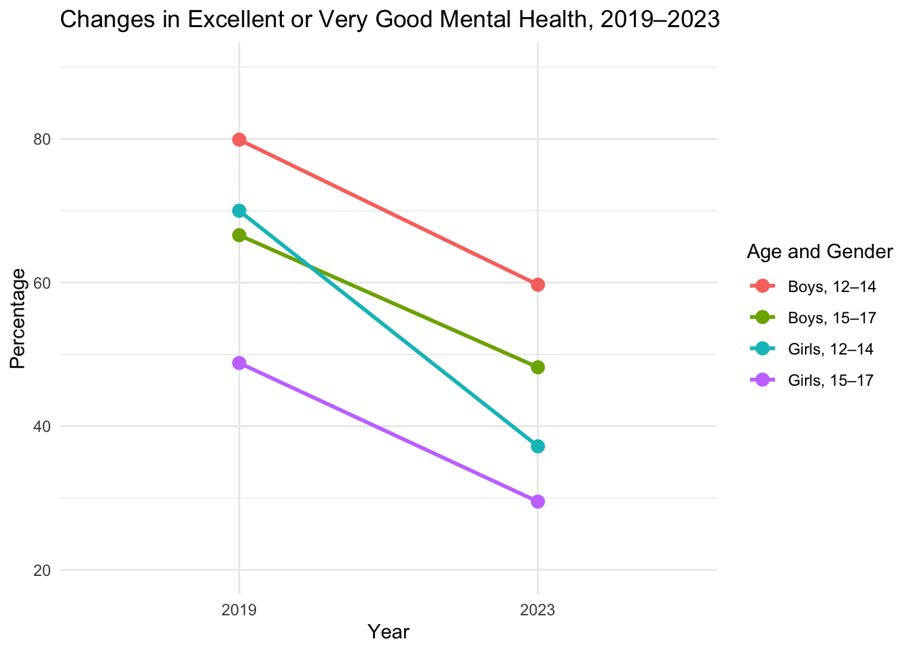
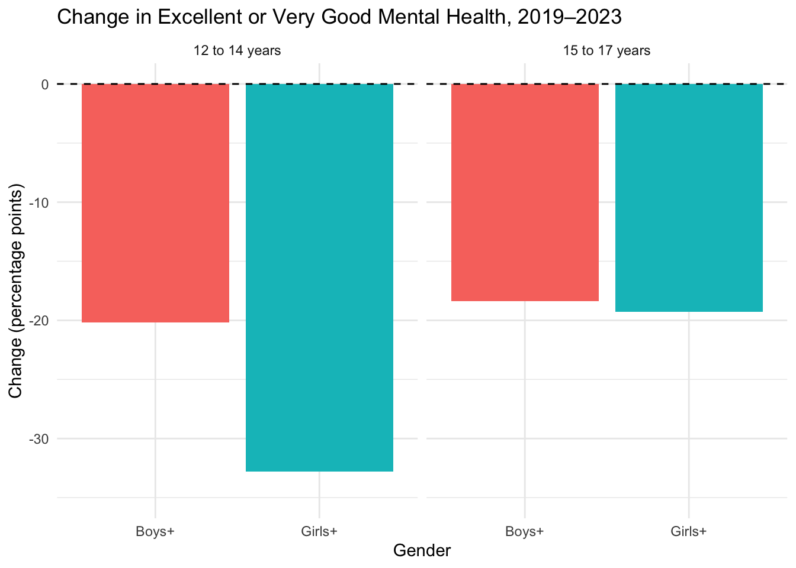
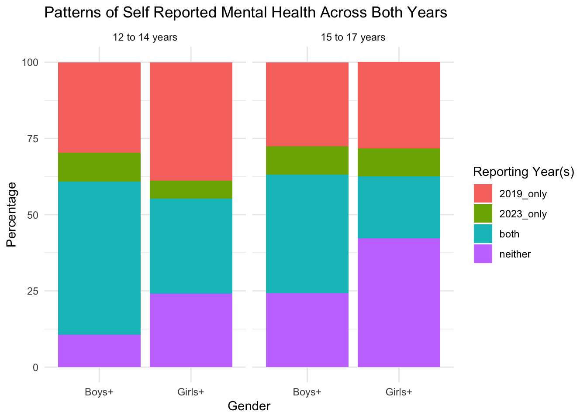

Before making any changes, I want to inspect the dataset and check the variables and categories it contains.
# Check the dimensions of the datasetdim(my_data)
[1] 54648 19
# Check variable names and data typesstr(my_data)
'data.frame': 54648 obs. of 19 variables:
$ REF_DATE : int 2023 2023 2023 2023 2023 2023 2023 2023 2023 2023 ...
$ GEO : chr "Canada" "Canada" "Canada" "Canada" ...
$ DGUID : chr "" "" "" "" ...
$ Age.group.in.2019: chr "Total, 12 to 17 years" "Total, 12 to 17 years" "Total, 12 to 17 years" "Total, 12 to 17 years" ...
$ Gender.in.2019 : chr "Total, Gender+" "Total, Gender+" "Total, Gender+" "Total, Gender+" ...
$ Status : chr "Reported indicator in 2019 only " "Reported indicator in 2019 only " "Reported indicator in 2019 only " "Reported indicator in 2019 only " ...
$ Indicators : chr "Perceived health, excellent or very good" "Perceived health, excellent or very good" "Perceived health, excellent or very good" "Perceived health, excellent or very good" ...
$ Characteristics : chr "Number of persons" "Low 95% confidence interval, number of persons" "High 95% confidence interval, number of persons" "Percent" ...
$ UOM : chr "Number" "Number" "Number" "Percent" ...
$ UOM_ID : int 223 223 223 239 239 239 223 223 223 239 ...
$ SCALAR_FACTOR : chr "units" "units" "units" "units" ...
$ SCALAR_ID : int 0 0 0 0 0 0 0 0 0 0 ...
$ VECTOR : chr "v1598161616" "v1598161617" "v1598161618" "v1598161619" ...
$ COORDINATE : chr "1.1.1.1.1.1" "1.1.1.1.1.2" "1.1.1.1.1.3" "1.1.1.1.1.4" ...
$ VALUE : num 423500 389100 457900 18.6 17.1 ...
$ STATUS : chr "" "" "" "" ...
$ SYMBOL : logi NA NA NA NA NA NA ...
$ TERMINATED : logi NA NA NA NA NA NA ...
$ DECIMALS : int 0 0 0 1 1 1 0 0 0 1 ...
# Check the categories in the main variablesunique(my_data$GEO)
[1] "Canada" "Newfoundland and Labrador"
[3] "Prince Edward Island" "Nova Scotia"
[5] "New Brunswick" "Quebec"
[7] "Ontario" "Manitoba"
[9] "Saskatchewan" "Alberta"
[11] "British Columbia"
unique(my_data$Indicators)
[1] "Perceived health, excellent or very good"
[2] "Perceived health, fair or poor"
[3] "Perceived mental health, excellent or very good"
[4] "Perceived mental health, fair or poor"
[5] "Smoking, daily or occasionally"
[6] "Smoking, daily"
[7] "Cannabis use in the past 12 months"
[8] "Cannabis use in the past 12 months, daily or almost daily"
[9] "Used e-cigarette or vaping device, past 30 days"
[10] "Self-reported physical activity, average 60 or more minutes per day"
[11] "Headache"
[12] "Stomach ache"
[13] "Backache"
[14] "Difficulties in getting to sleep"
[15] "Changed eating habits to manage weight"
[16] "Changed eating habits to manage weight, daily"
[17] "Life satisfaction, satisfied or very satisfied"
[18] "Met sleep guidelines in the last 7 days"
[19] "Preoccupied with a desire to be thinner"
[20] "Preoccupied with a desire to be thinner, daily"
[21] "Vomited to lose weight"
[22] "Vomited to lose weight, daily"
[23] "Perceived life stress, most days quite a bit or extremely stressful"
unique(my_data$`Age group in 2019`)
NULL
unique(my_data$`Gender in 2019`)
NULL
unique(my_data$Status)
[1] "Reported indicator in 2019 only "
[2] "Reported indicator in 2023 only"
[3] "Reported indicator in 2019 and 2023"
[4] "Did not report indicator in 2019 and 2023"
unique(my_data$Characteristics)
[1] "Number of persons"
[2] "Low 95% confidence interval, number of persons"
[3] "High 95% confidence interval, number of persons"
[4] "Percent"
[5] "Low 95% confidence interval, percent"
[6] "High 95% confidence interval, percent"
# Check missing valuescolSums(is.na(my_data))
REF_DATE GEO DGUID Age.group.in.2019
0 0 0 0
Gender.in.2019 Status Indicators Characteristics
0 0 0 0
UOM UOM_ID SCALAR_FACTOR SCALAR_ID
0 0 0 0
VECTOR COORDINATE VALUE STATUS
0 0 23940 0
SYMBOL TERMINATED DECIMALS
54648 54648 0
Selecting and Cleaning Relevant Data
First, I am selecting just my indicator of interest, which is perceived mental health rated as excellent or very good. I am also limiting the data to just Canada rather than including provincial estimates.
my_data <- my_data |>filter( GEO =="Canada", Indicators =="Perceived mental health, excellent or very good" )head(my_data)
REF_DATE GEO DGUID Age.group.in.2019 Gender.in.2019
1 2023 Canada Total, 12 to 17 years Total, Gender+
2 2023 Canada Total, 12 to 17 years Total, Gender+
3 2023 Canada Total, 12 to 17 years Total, Gender+
4 2023 Canada Total, 12 to 17 years Total, Gender+
5 2023 Canada Total, 12 to 17 years Total, Gender+
6 2023 Canada Total, 12 to 17 years Total, Gender+
Status
1 Reported indicator in 2019 only
2 Reported indicator in 2019 only
3 Reported indicator in 2019 only
4 Reported indicator in 2019 only
5 Reported indicator in 2019 only
6 Reported indicator in 2019 only
Indicators
1 Perceived mental health, excellent or very good
2 Perceived mental health, excellent or very good
3 Perceived mental health, excellent or very good
4 Perceived mental health, excellent or very good
5 Perceived mental health, excellent or very good
6 Perceived mental health, excellent or very good
Characteristics UOM UOM_ID SCALAR_FACTOR
1 Number of persons Number 223 units
2 Low 95% confidence interval, number of persons Number 223 units
3 High 95% confidence interval, number of persons Number 223 units
4 Percent Percent 239 units
5 Low 95% confidence interval, percent Percent 239 units
6 High 95% confidence interval, percent Percent 239 units
SCALAR_ID VECTOR COORDINATE VALUE STATUS SYMBOL TERMINATED DECIMALS
1 0 v1598161628 1.1.1.1.3.1 705000.0 NA NA 0
2 0 v1598161629 1.1.1.1.3.2 664800.0 NA NA 0
3 0 v1598161630 1.1.1.1.3.3 745100.0 NA NA 0
4 0 v1598161631 1.1.1.1.3.4 31.2 NA NA 1
5 0 v1598161632 1.1.1.1.3.5 29.4 NA NA 1
6 0 v1598161633 1.1.1.1.3.6 33.0 NA NA 1
Now I want to remove the “total” categories for both age and gender, since I am interested in comparing the two age groups and two gender categories separately:
my_data <- my_data |>filter( Age !="Total, 12 to 17 years", Gender !="Total, Gender+" )head(my_data)
REF_DATE GEO DGUID Age Gender Status
1 2023 Canada 12 to 14 years Boys+ Reported indicator in 2019 only
2 2023 Canada 12 to 14 years Boys+ Reported indicator in 2019 only
3 2023 Canada 12 to 14 years Boys+ Reported indicator in 2019 only
4 2023 Canada 12 to 14 years Boys+ Reported indicator in 2019 only
5 2023 Canada 12 to 14 years Boys+ Reported indicator in 2019 only
6 2023 Canada 12 to 14 years Boys+ Reported indicator in 2019 only
Indicator
1 Perceived mental health, excellent or very good
2 Perceived mental health, excellent or very good
3 Perceived mental health, excellent or very good
4 Perceived mental health, excellent or very good
5 Perceived mental health, excellent or very good
6 Perceived mental health, excellent or very good
MetricType UOM UOM_ID SCALAR_FACTOR
1 Number of persons Number 223 units
2 Low 95% confidence interval, number of persons Number 223 units
3 High 95% confidence interval, number of persons Number 223 units
4 Percent Percent 239 units
5 Low 95% confidence interval, percent Percent 239 units
6 High 95% confidence interval, percent Percent 239 units
SCALAR_ID VECTOR COORDINATE Value STATUS SYMBOL TERMINATED DECIMALS
1 0 v1598163836 1.2.2.1.3.1 178700.0 NA NA 0
2 0 v1598163837 1.2.2.1.3.2 155600.0 NA NA 0
3 0 v1598163838 1.2.2.1.3.3 201800.0 NA NA 0
4 0 v1598163839 1.2.2.1.3.4 29.7 NA NA 1
5 0 v1598163840 1.2.2.1.3.5 26.1 NA NA 1
6 0 v1598163841 1.2.2.1.3.6 33.2 NA NA 1
I am also selecting only the percentage estimates, rather than the number of persons or confidence interval estimates.
REF_DATE GEO DGUID Age Gender
1 2023 Canada 12 to 14 years Boys+
2 2023 Canada 12 to 14 years Boys+
3 2023 Canada 12 to 14 years Boys+
4 2023 Canada 12 to 14 years Boys+
5 2023 Canada 12 to 14 years Girls+
6 2023 Canada 12 to 14 years Girls+
Status
1 Reported indicator in 2019 only
2 Reported indicator in 2023 only
3 Reported indicator in 2019 and 2023
4 Did not report indicator in 2019 and 2023
5 Reported indicator in 2019 only
6 Reported indicator in 2023 only
Indicator MetricType UOM UOM_ID
1 Perceived mental health, excellent or very good Percent Percent 239
2 Perceived mental health, excellent or very good Percent Percent 239
3 Perceived mental health, excellent or very good Percent Percent 239
4 Perceived mental health, excellent or very good Percent Percent 239
5 Perceived mental health, excellent or very good Percent Percent 239
6 Perceived mental health, excellent or very good Percent Percent 239
SCALAR_FACTOR SCALAR_ID VECTOR COORDINATE Value STATUS SYMBOL
1 units 0 v1598163839 1.2.2.1.3.4 29.7 NA
2 units 0 v1598163977 1.2.2.2.3.4 9.5 NA
3 units 0 v1598164115 1.2.2.3.3.4 50.2 NA
4 units 0 v1598164253 1.2.2.4.3.4 10.6 NA
5 units 0 v1598164391 1.2.3.1.3.4 38.7 NA
6 units 0 v1598164529 1.2.3.2.3.4 5.9 E NA
TERMINATED DECIMALS
1 NA 1
2 NA 1
3 NA 1
4 NA 1
5 NA 1
6 NA 1
Checking variable types and values
Now I want to check that the value column is numeric, since I will be using it to calculate percentages and changes.
# Check variable typesstr(my_data)
'data.frame': 16 obs. of 19 variables:
$ REF_DATE : int 2023 2023 2023 2023 2023 2023 2023 2023 2023 2023 ...
$ GEO : chr "Canada" "Canada" "Canada" "Canada" ...
$ DGUID : chr "" "" "" "" ...
$ Age : chr "12 to 14 years" "12 to 14 years" "12 to 14 years" "12 to 14 years" ...
$ Gender : chr "Boys+" "Boys+" "Boys+" "Boys+" ...
$ Status : chr "Reported indicator in 2019 only " "Reported indicator in 2023 only" "Reported indicator in 2019 and 2023" "Did not report indicator in 2019 and 2023" ...
$ Indicator : chr "Perceived mental health, excellent or very good" "Perceived mental health, excellent or very good" "Perceived mental health, excellent or very good" "Perceived mental health, excellent or very good" ...
$ MetricType : chr "Percent" "Percent" "Percent" "Percent" ...
$ UOM : chr "Percent" "Percent" "Percent" "Percent" ...
$ UOM_ID : int 239 239 239 239 239 239 239 239 239 239 ...
$ SCALAR_FACTOR: chr "units" "units" "units" "units" ...
$ SCALAR_ID : int 0 0 0 0 0 0 0 0 0 0 ...
$ VECTOR : chr "v1598163839" "v1598163977" "v1598164115" "v1598164253" ...
$ COORDINATE : chr "1.2.2.1.3.4" "1.2.2.2.3.4" "1.2.2.3.3.4" "1.2.2.4.3.4" ...
$ Value : num 29.7 9.5 50.2 10.6 38.7 5.9 31.3 24 27.6 9.2 ...
$ STATUS : chr "" "" "" "" ...
$ SYMBOL : logi NA NA NA NA NA NA ...
$ TERMINATED : logi NA NA NA NA NA NA ...
$ DECIMALS : int 1 1 1 1 1 1 1 1 1 1 ...
# Check that Value is numericis.numeric(my_data$Value)
[1] TRUE
# Check the remaining categoriesunique(my_data$Age)
[1] "12 to 14 years" "15 to 17 years"
unique(my_data$Gender)
[1] "Boys+" "Girls+"
unique(my_data$Status)
[1] "Reported indicator in 2019 only "
[2] "Reported indicator in 2023 only"
[3] "Reported indicator in 2019 and 2023"
[4] "Did not report indicator in 2019 and 2023"
Looks good!
Combining categories and calculating change
Since I am interested in comparing 2019 and 2023, I need to combine some of the reporting categories. “Reported indicator in 2019 only” and “Reported indicator in 2019 and 2023” will be combined to calculate the percentage reporting excellent or very good mental health in 2019. Similarly, “Reported indicator in 2023 only” and “Reported indicator in 2019 and 2023” will be combined to calculate the percentage for 2023.
First, I will simplify the status labels and standardize them by removing inconsistent spacing in the original dataset.
my_data$Status <- stringr::str_squish(my_data$Status)my_data <- my_data |>mutate(Status =case_when( Status =="Reported indicator in 2019 only"~"2019_only", Status =="Reported indicator in 2023 only"~"2023_only", Status =="Reported indicator in 2019 and 2023"~"both", Status =="Did not report indicator in 2019 and 2023"~"neither" ) )unique(my_data$Status)
[1] "2019_only" "2023_only" "both" "neither"
Now, reshaping the data so each status becomes its own column:
# A tibble: 4 × 9
Age Gender `2019_only` `2023_only` both neither percent_2019 percent_2023
<chr> <chr> <dbl> <dbl> <dbl> <dbl> <dbl> <dbl>
1 12 to … Boys+ 29.7 9.5 50.2 10.6 79.9 59.7
2 12 to … Girls+ 38.7 5.9 31.3 24 70 37.2
3 15 to … Boys+ 27.6 9.2 39 24.2 66.6 48.2
4 15 to … Girls+ 28.4 9.1 20.4 42.2 48.8 29.5
# ℹ 1 more variable: change <dbl>
Testing
First, I will check that the categories are complete and that the filtering process has not inadvertently excluded observations by seeing if the four categories add up to approximately 100%:
# A tibble: 4 × 3
Age Gender total_percent
<chr> <chr> <dbl>
1 12 to 14 years Boys+ 100
2 12 to 14 years Girls+ 99.9
3 15 to 17 years Boys+ 100
4 15 to 17 years Girls+ 100.
all(abs(status_totals$total_percent -100) <0.2)
[1] TRUE
I will also now check for any missing or invalid values.
all(!is.na(my_data$Value))
[1] TRUE
all(my_data$Value >=0& my_data$Value <=100)
[1] TRUE
Lastly, I want to check that my addition of the two years was correct and that the calculated change is consistent with the two yearly values:
plot_data <- plot_data |>mutate(Group =case_when( Age =="12 to 14 years"& Gender =="Boys+"~"Boys, 12–14", Age =="15 to 17 years"& Gender =="Boys+"~"Boys, 15–17", Age =="12 to 14 years"& Gender =="Girls+"~"Girls, 12–14", Age =="15 to 17 years"& Gender =="Girls+"~"Girls, 15–17" ) )ggplot(plot_data, aes(x = Year,y = Percentage,color = Group,group = Group)) +geom_line(linewidth =1) +geom_point(size =3) +ylim(20,90) +labs(title ="Changes in Excellent or Very Good Mental Health, 2019–2023",x ="Year",y ="Percentage",color ="Age and Gender" ) +theme_minimal()

And as a percent change:
ggplot(reshaped_data, aes(x = Gender, y = change, fill = Gender)) +geom_col() +facet_wrap(~ Age) +geom_hline(yintercept =0, linetype ="dashed") +ylim(-35,0) +labs(title ="Change in Excellent or Very Good Mental Health, 2019–2023",x ="Gender",y ="Change (percentage points)" ) +theme_minimal() +guides(fill ="none")

ggplot(my_data, aes(x = Gender, y = Value, fill = Status)) +geom_col() +facet_wrap(~ Age) +labs(title ="Patterns of Self Reported Mental Health Across Both Years",x ="Gender",y ="Percentage",fill ="Reporting Year(s)" ) +theme_minimal()

gap_data <-data.frame(Year =c("2019", "2023"),GenderGap =c(13.85, 20.6))ggplot(gap_data, aes(x = Year, y = GenderGap)) +geom_col(fill ="steelblue") +ylim(0,25)+labs(title ="Difference Between Boys' and Girls' Self-Reported Mental Health",subtitle ="Positive values indicate a higher percentage among boys than girls",x ="Year",y ="Difference (percentage points)" ) +theme_minimal()